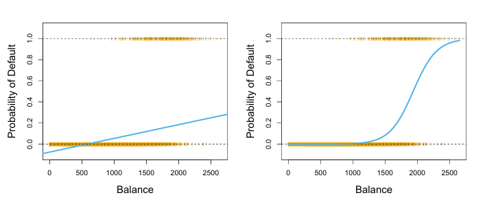
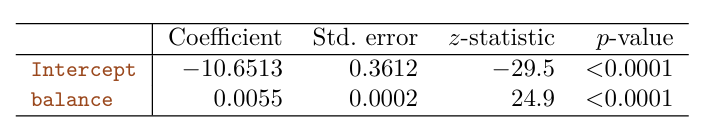
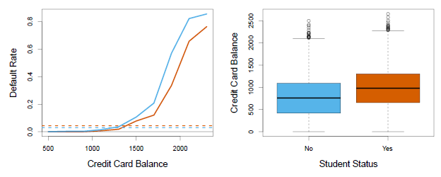
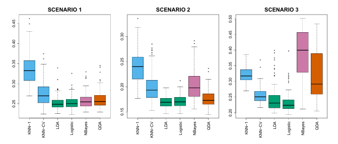
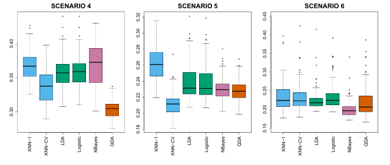
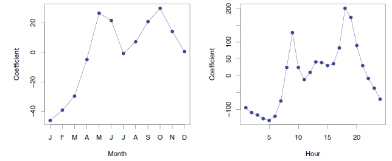
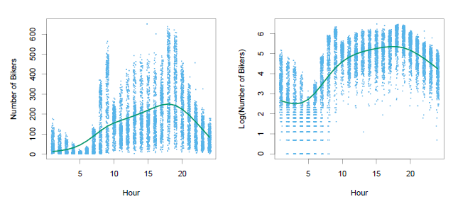

Notes
What is classification?
Predicting classification a qualitative response for an observation can be referred to as classifying that observation, since it involves assigning the observation to a category, or class.
Some questions that can be solved with classification
- A person arrives at the emergency room with a set of symptoms that could possibly be attributed to one of three medical conditions. Which of the three conditions does the individual have?
- An online banking service must be able to determine whether or not a transaction being performed on the site is fraudulent, on the basis of the user’s IP address, past transaction history, and so forth.
- On the basis of DNA sequence data for a number of patients with and without a given disease, a biologist would like to figure out which DNA mutations are deleterious (disease-causing) and which are not.
Why not linear regression?
- Linear regression should not be used to predict a qualitative or categorical variable with more than 2 levels that does not have a natural ordering
- Linear regression should not be used to predict a qualitative or categorical variable with more than 2 levels that does not have a reasonably similar gap between each level.
- If your qualitative outcome variable only has 2 levels you could recode it as a dummy variable with 0/1 coding. This is not recommmended because the probability estimates will probably not be meaningful, for example have negative probabilities.
- A linear regression model to predict the relationship between
defaultandbalanceleads to negative probabilities of default for bank balances close to zero.
Examples of categorical variables that are not appropriate as outcome variables for linear regression?
Logistic Regression
Rather than modeling this response \(Y\) directly, logistic regression models the probability that \(Y\) belongs to a particular category
Classification using the Default data. Left: Estimated probability of default using linear regression. Some estimated probabilities are negative! The orange ticks indicate the 0/1 values coded for default (No or Yes). Right: Predicted probabilities of default using logistic regression. All probabilities lie between 0 and 1.
- logistic regression uses a logistic function which gives probability estimates between 0 and 1 for all values of \(X\).
- a logistic function will always produce an S-shaped curve, probabilities will come close to but never below zero and close but never above one.
- probability of response \(Y\) can be predicted based on any value of \(X\).
- \({\beta_1}\) in linear regression is the average change in \(Y\) associated with a one-unit increase in \(X\). By contrast, in a logistic regression model, increasing \(X\) by one unit changes the log odds by \({\beta_1}\)
- regardless of the value of \(X\), if \({\beta_1}\) is positive then increasing \(X\) will be associated with increasing \(p(X)\), and if \({\beta_1}\) is negative then increasing \(X\) will be associated with decreasing \(p(X)\).
\[p(X) = β_0 + β_1X \space \Longrightarrow {Linear \space regression}\] \[p (X) = \frac{e^{\beta_{0} + \beta_{1}X}}{1 + e^{\beta_{0} + \beta_{1}X}} \space \Longrightarrow {Logistic \space function}\]
Maximum Likelihood
Using maximum likelihood, the regression coefficients are chosen based on the probability estimates being as close as possible to the observed response of \(Y\) for each case in the training data.
The estimates \(\hat{\beta_0}\) and \(\hat{\beta_1}\) are chosen to maximize this likelihood function.

Default data, estimated coefficients of the logistic regression model that predicts the probability of default using balance. A one-unit increase in balance is associated with an increase in the log odds of default by 0.0055 units.Making Predictions
Once we have our estimated coefficients we can input any value of \(X\) into the model and predict the probability of \(Y\). Using the bank example, we can predict default based on any balance.
\[\hat{p}(X) = \frac{e^{\hat{\beta}_{0} + \hat{\beta}_{1}X}}{1 + e^{\hat{\beta}_{0} + \hat{\beta}_{1}X}} = \frac{e^{-10.6513 + 0.0055 \times 1000}}{1 + e^{-10.6513 + 0.0055 \times 1000}} = 0.00576\]
Qualitative predictors
Instead of a quantitative predictor like credit balance, we could use a qualitative, or categorical, variable, like whether or not someone is a student, to predict whether or not someone will default.
Multiple Logistic Regression
The equation for simple logistic regression can be rewritten to include coefficient estimates for \(p\) predictors.
\[\log \biggl(\frac{p(X)}{1- p(X)}\bigg) = \beta_{0} + \beta_{1}X_1 + ... + \beta_{p}X_p\] \[p(X) = \frac{e^{\beta_{0} + \beta_{1}X_1 + ... + \beta_{p}X_p}}{1 + e^{\beta_{0} + \beta_{1}X_1 + ... + \beta_{p}X_p}}\]

Confounding in the Default data. Left: Default rates are shown for students (orange) and non-students (blue). The solid lines display default rate as a function of balance, while the horizontal broken lines display the overall default rates. Right: Boxplots of balance for students (orange) and non-students (blue) are shown.
Multinomial Logistic Regression
This is used in the setting where K > 2 classes. In multinomial, we select a single class to serve as the baseline.
However, the interpretation of the coefficients in a multinomial logistic regression model must be done with care, since it is tied to the choice of baseline.
Alternatively, you can use `Softmax coding, where we treat all K classes symmetrically, and assume that for k = 1, . . . ,K, rather than selecting a baseline. This means, we estimate coefficients for all K classes, rather than estimating coefficients for K − 1 classes.
Generative Models for Classification
model the distribution of the predictors X separately in each of the response classes (i.e. for each value of Y ).
Why not logistic regression?
When there is substantial separation between the two classes, the parameter estimates for the logistic regression model are surprisingly unstable.
If the distribution of the predictors X is approximately normal in each of the classes and the sample size is small, then the generative modelling may be more accurate than logistic regression.
Generative modelling can be naturally extended to the case of more than two response classes.
\(\pi_k\) = overall or prior probability that a randomly chosen observation comes from the prior kth class
\(f_k(X) \equiv \Pr(X \mid Y = k)\) = the density function of \(X\) for an observation that comes from the \(k\)th class. It is relatively large if there is a high probability that an observation in the \(k\)th class has \(X \approx x\), and \(f_k(X)\) is small if it is very unlikely that an observation in the \(k\)th class has \(X \approx x\).
\(p_k(X)\) is the probability that the observation belongs to the kth class, given the predictor value for that observation.
3 classifiers to approximate the Bayes classifier
- Linear Discriminant Analysis (LDA) - normal distribution, covariance matrix that is common to all \(K\) classes
- Quadratic Discriminant Analysis (QDA) - normal distribution, covariance matrix that is NOT common to all \(K\) classes
- Naive Bayes - uncorrelated predictors, small n, no distribution assumption
Comparison of classification methods
Empirical comparison
6 scenarios to empirically compare the performance of logistic regression, linear discriminant analysis (LDA), quadratic discriminant analysis (QDA), naive Bayes, and K Nearest Neighbors (KNN). Each of the 6 different scenarios was a binary classification problem with 2 quantitative predictors.
Linear Bayes decision boundaries
Scenario 1: 20 training observations for each class, uncorrelated normal distribution predictors
Scenario 2: Similar to scenario 1, but predictors had a correlation of -0.5.
Scenario 3: Substantial negative correlation, and predictors were generated from the t-distribution with 50 trainings observations for each class.

Non-linear Bayes decision boundaries
Scenario 4: normal distribution, correlation of 0.5 between the predictors in the first class, and correlation of 0.5 between the predictors in the second class
Scenario 5: normal distribution with uncorrelated predictors, responses were sampled from the logistic function applied to a complicated non-linear function of the predictors
Scenario 6: normal distribution with a different diagonal covariance matrix for each class and a very small sample size of 6 in each class

Poisson Regression
Why not linear regression?
Similarly to predicting the probability of qualitative variables, negative predictions of count data are not meaningful.

Left: The coefficients associated with the month of the year. Bike usage is highest in the spring and fall, and lowest in the winter. Right: The coefficients associated with the hour of the day. Bike usage is highest during peak commute times, and lowest overnight.

Left: On the Bikeshare dataset, the number of bikers is displayed on the y-axis, and the hour of the day is displayed on the x-axis. For the most part, as the mean number of bikers increases, so does the variance in the number of bikers, violating the assumption of homoscedasticity. A smoothing spline fit is shown in green. Right: The log of the number of bikers is now displayed on the y-axis.
Poisson distribution
Poisson distribution is typically used to model counts. When \(Y\) is neither quantitative (sales) nor qualitative (whether or not someone will default on a loan). In a poisson distribution, the variance is the same as the mean.
the larger the mean of \(Y\), the larger its variance.
Poisson regression
rather than modeling the number of bikers, \(Y\), as a Poisson distribution with a fixed mean value like \(\lambda\) = 5, we would like to allow the mean to vary as a function of the covariates.
Generalized Linear Models
Linear, logistic and Poisson are three examples of regression models that are known as a generalized linear model (GLM).
Each of them uses predictors \(X\) to predict a response \(Y\).
In general, we can perform a regression by modeling the response \(Y\) as coming from a particular member of the exponential family, and then transforming the mean of the response so that the transformed mean is a linear function of the predictors… Any regression approach that follows this very general recipe is known as a generalized linear model